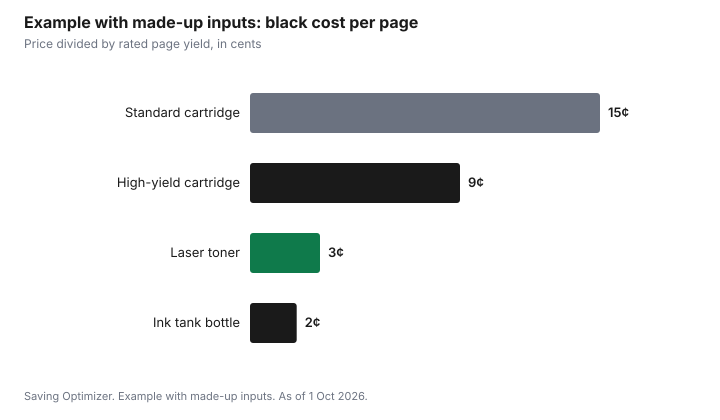

Technology · Canada
Printer Ink Costs in Canada: Cost Per Page, Ink Subscriptions and Laser vs Inkjet
In Canada, the cheapest printer is the one with the lowest cost per page for how much you print, not the lowest sticker price. Divide the cartridge price by its rated page yield to get the cost per page, then compare standard and high-yield cartridges, ink tank printers, ink subscriptions and laser printers. Mono laser printers suit households that print a lot of text; ink subscriptions suit steady, moderate printing; very light printers may do better using the library or a print shop.
Key takeaways
- Cost per page = cartridge price ÷ rated page yield.
- High-yield cartridges usually cost less per page than standard ones.
- Ink tank printers cost more up front and less per page.
- Ink subscriptions: monthly page allowance; cartridges may stop working if you cancel.
- Example with made-up inputs: $30 ÷ 200 pages = 15¢; $60 ÷ 3,000 pages = 2¢.
How to work out cost per page
Manufacturers publish page yields for cartridges, tested with standard pages under ISO methods. Divide the price by the yield. Your real cost will vary with what you print (photos use much more ink), but the calculation lets you compare options fairly. For colour printing, add the black and colour cartridges.
Options compared
| Option | Up-front cost | Cost per page | Best for |
|---|---|---|---|
| Inkjet with standard cartridges | Low | Often highest | Very occasional printing |
| Inkjet with high-yield cartridges | Low | Lower | Occasional printing |
| Ink tank printer | Higher | Low | Regular colour printing |
| Ink subscription | Low | Depends on monthly plan | Steady monthly printing |
| Mono laser printer | Moderate | Low for text | Lots of black-and-white text |
Ink subscriptions
Ink subscriptions charge a monthly fee for a set number of pages, and ship cartridges as needed. Check the price per extra page, whether unused pages roll over, and what happens when you cancel; subscription cartridges are often tied to the plan and may stop working after cancellation. The printer must stay connected to the internet.
Other ways to save
- Print in draft or greyscale mode for everyday documents.
- Compatible or remanufactured cartridges can cost less; some printers may reject non-original cartridges after firmware updates, so check reviews and the return policy.
- Public libraries and print shops charge per page and suit very light printing.
- Recycle cartridges through retailer or manufacturer programs.
Example with made-up inputs: cost per page
These numbers are an example with made-up inputs, not current prices or yields.
| Option | Price | Rated pages | Cost per page |
|---|---|---|---|
| Standard cartridge | $30 | 200 | 15¢ |
| High-yield cartridge | $45 | 500 | 9¢ |
| Laser toner | $90 | 3,000 | 3¢ |
| Ink tank bottle | $20 | 1,000 | 2¢ |

Sources
- Manufacturer page yields are tested to ISO standard methods; actual yields vary with use, as of 1 Oct 2026.
- The prices and page yields in the example table and chart are made-up inputs.
Frequently asked questions
How do I calculate printer cost per page?
Divide the cartridge price by its rated page yield. Add black and colour cartridges for colour pages.
Are ink subscriptions worth it in Canada?
They can be if you print a steady amount each month. Check extra-page prices, rollover and what happens to cartridges if you cancel.
Is a laser printer cheaper than inkjet?
For lots of black-and-white text, a mono laser printer usually costs less per page. For occasional colour, an inkjet or ink tank may fit better.
Are third-party cartridges safe to use?
Many work, but some printers may reject them after firmware updates. Check reviews and the return policy.
Should I own a printer at all?
If you print only a few pages a year, a library or print shop may cost less than buying cartridges that dry out.
Researched and drafted with AI assistance and fact-checked against official Canadian sources. How we create content.
Disclosure: Printers, cartridges and subscriptions are described as offer types; none is named or ranked. Saving Optimizer may earn a commission if a partner link is added later; no partnership is claimed. Education only.